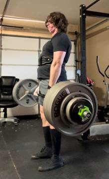

Robert Schweller (Robbie Schweller)
Julia Beecherl Endowed Professor of Computer Science
Department of Computer Science
The University of Texas Rio Grande Valley
1201 W. University Drive
Edinburg, Texas 78539-2999
Office: EIEAB 3.220
Phone (office): 956-665-2667
Phone (cell): 773-456-1722
Fax: 956-665-5099
Email: schwellerr@gmail.com
Office Hours: M 8:00-12:00 pm, W 8-9:15am
I received my Ph.D. in Computer Science from Northwestern University in June 2007 and my B.A. in
Mathematics from Carleton College in June 2001.
Research Interests:
My general research area is the design and analysis of algorithms. More
specific interests include the algorithmic self-assembly of DNA, chemical
reaction networks, and robot motion planning.
Teaching: I am currently teaching the following
courses:
Fall 2026:
Publications
Peer-Reviewed
Publications:
1.
Reachability with
Restricted Reactions in Inhibitory Chemical Reaction Networks
Divya Bajaj, Bin Fu, Ryan Knobel,
Austin Luchsinger, Aiden Massie, Pablo Santos, Ramiro Santos, Robert Schweller,
Evan Tomai, Tim Wylie
Proc. of the 20th Scandinavian Symposium on Algorithm Theory (SWAT 2026)
Copenhagen, Denmark, June 17-19,
2026
[pdf]
2.
General Computation using
Slidable Tiles with Deterministic Global Forces
Alberto Avila-Jimenez, David
Barreda, Sarah-Laurie Evans, Austin Luchsinger, Aiden Massie, Robert Schweller,
Evan Tomai, Tim Wylie
The 17th Innovations in Theoretical
Computer Science (ITCS 2026)
Bocconi University, Milan, Italy,
January 27-30, 2026.
[pdf]
3.
Polynomial Equivalence of
Extended Chemical Reaction Models
Divya Bajaj, Jose-Luis Castellanos,
Austin Luchsinger, Aiden Massie, Adrian Salinas, Pablo Santos, Ramiro Santos,
Robert Schweller, Tim Wylie
The 36th International
Symposium on Algorithms and Computation (ISAAC 2025)
Tainan, Taiwan, December 7-10, 2025.
[pdf]
4.
Reachability in Restricted
Chemical Reaction Networks
Robert M. Alaniz, Bin Fu, Timothy
Gomez, Elise Grizzell, Andrew Rodriguez, Marco Rodriguez, Robert Schweller, Tim
Wylie
Theoretical Computer Science, Volume
1056, 2025
[url]
5.
Polynomial Simulations of
CRN Models with Trimolecular Void Step-Cycle CRNs
Austin Luchsinger, Aiden Massie,
Robert Schweller, Evan Tomai, Tim Wylie
22nd International Conference on
Unconventional Computation and Natural Computation (UCNC 2025)
Nice, France, September 1-5, 2025.
[pdf
| slides(pdf)]
6.
Reachability in
Interactive Chemical Reaction Networks
Alberto Avila-Jimenez, Bin Fu, Elise
Grizzel, Robert Schweller, Tim Wylie
22nd International Conference on
Unconventional Computation and Natural Computation (UCNC 2025)
Nice, France, September 1-5, 2025.
[pdf]
7.
Reachability in
Deletion-only Chemical Reaction Networks
Bin
Fu, Timothy Gomez, Ryan Knobel, Austin Luchsinger, Aiden Massie, Marco
Rodriguez, Adrian Salinas, Robert Schweller, Tim Wylie
DNA31
- 31st International Conference on DNA Computing and Molecular Programming (DNA
2025)
Lyon,
France, August 25-29, 2025.
[pdf | slides(pdf) | slides(pptx)]
8.
Covert Computation in
the Prebuilt aTAM
Timothy
Gomez, Robert Schweller, Tim Wylie
The
37th Canadian Conference on Computational Geometry (CCCG 2025)
Toronto,
Canada, August 11-15, 2025
9.
Fractals in Seeded
Tile Automata
Asher
Haun, Ryan Knobel, Adrian Salinas, Ramiro Santos, Robert Schweller, Tim Wylie
The
4th Symposium on Algorithmic Foundations of Dynamic Networks (SAND 2025)
Liverpool,
UK, June 9th – 11th, 2025
10. Journal Version
Fractals in Seeded Tile Automata
Asher Haun, Ryan Knobel, Adrian Salinas, Ramiro
Santos, Robert Schweller, Tim Wylie
Theoretical Computer Science, Volume 1081, August
2026
11. Brief
Announcement: Intrinsic Universality in Seeded Active Tile Self-Assembly
Timothy
Gomez, Elise Grizzell, Asher Haun, Ryan Knobel, Tom Peters, Robert Schweller,
Tim Wylie.
Proc.
of the Symposium on Algorithmic Foundations of Dynamic Networks (SAND'25), 330,
24:1-24:6, 2025.
12.
Brief Announcement:
Reachability in Deletion-only Chemical Reaction Networks
Bin
Fu, Timothy Gomez, Ryan Knobel, Austin Luchsinger, Aiden Massie, Marco
Rodriguez, Adrian Salinas, Robert Schweller, Tim Wylie.
Proc.
of the Symposium on Algorithmic Foundations of Dynamic Networks (SAND'25), 330,
23:1-23:6, 2025.
13.
Domain-Based
Nucleic-Acid Minimum Free Energy: Algorithmic Hardness and Parameterized Bounds
Erik
D. Demaine, Timothy Gomez, Elise Grizzell, Markus Hecher, Jayson Lynch, Robert
Schweller, Ahmed Shalaby, Damien Woods
The
30th International Conference on DNA Computing and Molecular Programming
(DNA30)
Johns
Hopkins University, September 16-20, 2024
14.
Building Discrete
Self-Similar Fractals in Seeded Tile Automata
Ryan
Knobel, Adrian Salinas, Robert Schweller, Tim Wylie
The
36th Canadian Conference on Computational Geometry (CCCG 2024)
Brock
University, St. Catharines, Ontario, Canada, July 17th – 19th,
2024
15.
Computing Threshold
Circuits with Bimolecular Void Reactions in Step Chemical Reaction Networks
Rachel
Anderson, Bin Fu, Aiden Massie, Gourab Mukhopadhyay, Adrian Salinas, Robert
Schweller, Evan Tomai, Tim Wylie
Unconventional
Computation and Natural Computation (UCNC 2024)
Pohang
University of Science and Technology, Pohang, Gyeongsangbuk-do, Republic of
Korea, June 17-21, 2024
16.
Computing Threshold
Circuits with Void Reactions in Step Chemical Reaction Networks
Rachel
Anderson, Alberto Avila, Bin Fu, Timothy Gomez, Elise Grizzell, Aiden Massie,
Gourab Mukhopadhyay, Adrian Salinas, Robert Schweller, Evan Tomai, Tim Wylie
10th
conference on Machines, Computations and Universality (MCU 2024)
Nice,
France, June 5-7, 2024
17.
Complexity of
Reconfiguration in Surface Chemical Reaction Networks
Robert M. Alaniz, Josh Brunner,
Michael Coulombe, Erik D. Demaine, Yevhenii Diomidov, Timothy Gomez, Elise
Grizzell, Ryan Knobel, Jayson Lynch, Andrew Rodriguez, Robert Schweller, Tim
Wylie
The 29th International
Conference on DNA Computing and Molecular Programming (DNA29)
Tohoku University, Sendai,
Japan, September 11-15, 2023
18.
Reconfiguration of
Linear Surface Chemical Reaction Networks with Bounded State Change
Robert M. Alaniz, Michael
Coulombe, Erik Demaine, Bin Fu, Timothy Gomez, Elise Grizzell, Ryan Knobel,
Andrew Rodriguez, Robert Schweller, Timothy Wylie
The 35th Canadian
Conference on Computational Geometry (CCCG 2023)
Montreal, Quebec Canada, August
2-4, 2023
19.
Covert Computation in
the Abstract Tile-Assembly Model
Robert M. Alaniz, David
Caballero, Timothy Gomez, Elise Grizzell, Andrew Rodriguez, Robert Schweller
and Tim Wylie
2nd Symposium on
Algorithmic Foundations of Dynamic Networks (SAND 2023)
Pisa, Italy, 19-21, June 2023.
20.
Uniform Robot
Relocation is Hard in only two Directions even without Obstacles
David Caballero, Angel Cantu,
Timothy Gomez, Austin Luchsinger, Robert Schweller and Tim Wylie
20th International Conference
on Unconventional Computation and Natural Computation (UCNC 2023)
21. Journal Version
Uniform
Robot Relocation is Hard in only two Directions even without Obstacles
David
Caballero, Angel Cantu, Timothy Gomez, Austin Luchsinger, Robert Schweller and
Tim Wylie
Natural
Computing 24 (1), 3-16, 2025.
22.
Simulation of Multiple
Stages in Single Bin Active Tile Self-Assembly
Andrew Rodriguez, Sonya Cirlos,
Timothy Gomez, Elise Grizzell, Robert Schweller, Tim Wylie
20th International Conference
on Unconventional Computation and Natural Computation (UCNC 2023)
23.
Reachability in
Population Protocols is PSPACE-Complete (Short Abstract)
Bin Fu, Timothy Gomez, Elise
Grizzell, Andrew Rodriguez, Robert Schweller and Tim Wylie
Japan Conference on Discrete
and Computational Geometry, Graphs, and Games (JCDCGGG 2022)
24.
Fewest Moves
Inequality Constraint Puzzles (Short Abstract)
Robert Alaniz, Timothy Gomez,
Robert Schweller and Tim Wylie
The 24th Japan
Conference on Discrete and Computational Geometry, Graphs, and Games (JCDCGGG
2022)
25.
Unique Assembly
Verification in Two-Handed Self-Assembly
David Caballero, Timothy Gomez,
Robert Schweller, Tim Wylie
Proceedings of the 49th International Colloquium on Automata, Languages
and Programming (ICALP 2022)
Paris, France, July 4-8, 2022
26.
Journal Version
Unique Assembly
Verification in Two-Handed Self-Assembly
David Caballero,
Timothy Gomez, Robert Schweller, Tim Wylie
Algorithmica, February 2023 [ online ]
27.
Building
Squares with Optimal State Complexity in Restricted Active Self-Assembly
Robert M. Alaniz, David Caballero, Sonya C. Cirlos, Timothy Gomez, Elise Grizzell, Andrew Rodriguez, Robert Schweller, Armando Tenorio, Tim Wylie
Proceedings of the
1st Symposium on Algorithmic Foundations of Dynamic Networks (SAND
2022), 2022
28.
Journal Version
Building Squares with Optimal State Complexity in Restricted Active
Self-Assembly
Robert M. Alaniz, David Caballero, Sonya C. Cirlos, Timothy Gomez, Elise Grizzell, Andrew Rodriguez, Robert Schweller, Armando Tenorio, Tim Wylie
Journal of Computer and
System Sciences, 2023
29.
Complexity
of Verification in Self-Assembly with Prebuilt Assemblies
David Caballero, Timothy Gomez, Robert Schweller, Tim Wylie
Proceedings of the
1st Symposium on Algorithmic Foundations of Dynamic Networks (SAND
2022), 2022
30.
Journal Version
Complexity of Verification in Self-Assembly with Prebuilt Assemblies
David Caballero, Timothy
Gomez, Robert Schweller, Tim Wylie
Journal of Computer and System Sciences, Volume 136, September 2023 [ bibtex | online
]
31. On the Effects of Hierarchical Self-Assembly for Reducing Program-Size
Complexity
Sarah Cannon, Erik Demaine, Martin Demaine, Sarah Eisenstat, David Furcy, Matthew Patitz, Robert Schweller, Scott Summers, Andrew Winslow
Theoretical
Computer Science, 2021
32. Covert Computation in Staged Self-Assembly: Verification is
PSPACE-complete.
David Caballero,
Timothy Gomez, Robert Schweller, and Tim Wylie.
Proceedings of the
29th European Symposium on Algorithms (ESA'21), 2021.
33. The Complexity of Multiple Handed Self-Assembly.
David Caballero,
Timothy Gomez, Robert Schweller, and Tim Wylie.
Proceedings of the
29th International Conference on Unconventional Computation and Natural
Computation (UCNC'21), 2021.
34. Fast Reconfiguration of Robot Swarms with Uniform Control Signals
David Caballero,
Angel Cantu, Timothy Gomez, Austin Luchsinger, Robert Schweller, Tim Wylie
Natural Computing,
2021.
35. Unit Tilt Row Relocation in a Square (Short Abstract)
David Caballero, Angel
Cantu, Timothy Gomez, Austin Luchsinger, Robert Schweller and Tim Wylie
The 23rd
Thailand-Japan Conference on Discrete and Computational Geometry, Graphs, and
Games (TJCDCG3 2020+1), 2021.
36. Hardness of Reconfiguring Robot Swarms with Uniform External Control in
Limited Directions
David Caballero,
Angel A. Cantu, Timothy Gomez, Austin Luchsinger, Robert Schweller, Tim Wylie
Journal of
Information Processing 28:782-790, 2020
37. Signal Passing Self-Assembly Simulates Tile Automata
Angel Cantu, Austin
Luchsinger, Robert Schweller, Tim Wylie
Proceedings of the
31st International Symposium on Algorithms and Computation (ISAAC
2020), 2020.
38. Verification and Computation in Restricted Tile Automata.
David Caballero,
Timothy Gomez, Robert Schweller, and Tim Wylie.
Proceedings of the
26th Inter. Conf. on DNA Computing and Molecular Programming (DNA'20), 2020.
[pdf | talk]
39. Journal Version
Verification and Computation in Restricted Tile Automata.
David Caballero, Timothy Gomez, Robert Schweller, and Tim Wylie.
Natural Computing, accepted Sept. 30, 2021
40. Relocating Units in Robot Swarms with Uniform Control Signals is
PSPACE-Complete.
David Caballero,
Angel A. Cantu, Timothy Gomez, Austin Luchsinger, Robert Schweller, and Tim
Wylie.
Proceedings of the
32nd Canadian Conference on Computational Geometry (CCCG'20), 2020.
41. Building Patterned Shapes in Robot Swarms with Uniform Control Signals.
David Caballero,
Angel A. Cantu, Timothy Gomez, Austin Luchsinger, Robert Schweller, and Tim
Wylie.
Proceedings of the
32nd Canadian Conference on Computational Geometry (CCCG'20), 2020.
42. Hierarchical Shape Construction and Complexity for Slidable Polyominos
under Uniform External Forces
Jose
Balanza-Martinez, David Caballero, Angel Cantu, Mauricio Flores, Timothy Gomez,
Austin Luchsinger, Rene Reyes, Robert Schweller, Tim Wylie
ACM-SIAM Symposium
on Discrete Algorithms 2020 (SODA 2020).
Salt Lake City,
Utah, U.S., January 5-8, 2020.
[pdf]
43. Relocation with Uniform External Control in Limited Directions (Short
Abstract)
Jose Balanza-Martinez,
David Caballero, Angel Cantu, Timothy Gomez, Austin Luchsinger, Robert
Schweller, Tim Wylie
Japan Conference on
Discrete and Computational Geometry, Graphs, and Games: (JCDCG^3 2019)
Tokyo University of
Science, Tokyo, Japan, September 6-8, 2019.
44. Discrete
Planar Map Matching
Bin Fu, Robert Schweller, Tim Wylie
Proceedings of the 31st Canadian Conference in Computational
Geometry (CCCG 2019)
University of Alberta, Edmonton, Albert, Canada, August 8-10, 2019
45. Covert Computation in Self-Assembled Circuits
Angel Cantu, Austin Luchsinger, Robert Schweller,
Tim Wylie
Proceedings of the 46th International Colloquium on Automata, Languages
and Programming (ICALP 2019)
Patras, Greece, July 8-12, 2019
[]
46.
Journal Version:
Covert Computation in Self-Assembled Circuits
Angel Cantu,
Austin Luchsinger, Robert Schweller, Tim Wylie
Algorithmica 83, 531-552, 2021
47. Nearly Constant Tile Complexity for any Shape in Two-Handed Tile Assembly
Robert
Schweller, Andrew Winslow, Tim Wylie
Algorithmica, 2019
48.
Full Tilt: Universal
Constructors for General Shapes with Uniform External Forces.
Jose Balanza-Martinez, David
Caballero, Angel A. Cantu, Luis Angel Garcia, Austin Luchsinger, Rene Reyes,
Robert Schweller, and Tim Wylie.
Proc. of the 30th ACM-SIAM Symposium
on Discrete Algorithms (SODA'19), 2019.
49. Freezing Simulates Non-freezing Tile Automata
Cameron Chalk, Austin Luchsinger, Eric
Martinez, Robert Schweller, Andrew Winslow, and Tim Wylie
Proceedings of the 24th International
Conference on DNA Computing and Molecular Programming (DNA 24)
Shandong Normal University, Jinan, China, October
8-12, 2018.
[ springerLink
| pdf | bibtex]
50. Self-Assembly
of Any Shape with Constant Tile Types using High Temperature
Cameron Chalk, Austin Luchsinger, Robert Schweller, and Tim Wylie
Proceedings of the 26th Annual European Symposium
on Algorithms (ESA 2018)
Helsinki, Finland, August 8-12, 2018.
51. Optimal Staged Self-Assembly of Linear Assemblies
Cameron
Chalk, Eric Martinez, Robert Schweller, Luis Vega, Andrew Winslow, and Tim
Wylie
Proceedings of the 17th International
Conference on Unconventional Computation and Natural Computation (UCNC 2018)
Fontainebleau, France, June 25-29, 2018.
52.
Journal Version:
Optimal Staged Self-Assembly of Linear Assemblies
Cameron
Chalk, Eric Martinez, Robert Schweller, Luis Vega, Andrew Winslow, and Tim
Wylie
Natural Computing, 2019.
53.
Complexities for High-Temperature
Two-Handed Tile Self-Assembly
Robert Schweller, Andrew Winslow, Tim Wylie
Proceedings of the 23rd International Conference
on DNA Computing and Molecular Programming (DNA 23)
Austin, Texas, September 24-28, 2017.
54.
Self-Assembly of Shapes at Constant
Scale Using Repulsive Forces
Austin Luchsinger, Robert Schweller, Tim Wylie
Proceedings of the 16th International
Conference on Unconventional Computation and Natural Computation (UCNC 2017)
Fayetteville, Arkansas, June 5-9, 2017.
55.
Journal Version:
Self-Assembly
of Shapes at Constant Scale Using Repulsive Forces
Austin
Luchsinger, Robert Schweller, Tim Wylie
Natural Computing, 2018
56.
Verification in Staged Tile
Self-Assembly
Robert Schweller, Andrew Winslow, Tim Wylie
Proceedings of the 16th International
Conference on Unconventional Computation and Natural Computation (UCNC 2017)
Fayetteville, Arkansas, June 5-9, 2017.
[ ]
57.
Journal
Version:
Verification in Staged Tile Self-Assembly
Robert
Schweller, Andrew Winslow, Tim Wylie
Natural
Computing, 2019, Volume 18, Issue 1, pp 107-117
[ springerLink
]
58.
Universal Shape Replicators via
Self-Assembly with Attractive and Repulsive Forces
Cameron Chalk, Erik D. Demaine,
Martine L. Demaine, Eric Martinez, Robert Schweller, Luis Vega, Tim Wylie
Proceedings of
the 28th Annual ACM-SIAM Symposium on Discrete Algorithms (SODA 2017)
Barcelona, Spain, January 16-19, 2017.
59. Optimal Staged Self-Assembly of General Shapes
Cameron
Chalk, Eric Martinez, Robert Schweller, Luis Vega, Andrew Winslow, and Tim
Wylie
Proceedings of the 24th European
Symposium of Algorithms (ESA 2016)
Aarhus, Denmark,
August 22-26, 2016.
Journal
version:
60.
Optimal Staged Self-Assembly of General Shapes
Cameron
Chalk, Eric Martinez, Robert Schweller, Luis Vega, Andrew Winslow, and Tim
Wylie
Algorithmica, Volume 80, Issue 4, pp
1383-1409, April 2018
61.
Strict Self-Assembly of Fractals using
Multiple Hands
Cameron
Chalk, Dominic Fernandez, Alejandro Huerta, Mario Maldonado, Robert Schweller,
Leslie Sweet
Algorithmica, Volume
76, Issue 1, pp 195-224, September 2016.
[ arXiv | springerLink
]
62.
Resiliency to Multiple Nucleation in
Temperature-1 Self-Assembly
Matthew J. Patitz, Trent A. Rogers, Robert Schweller, Scott M. Summers, Andrew Winslow
Proceedings of the 22nd International
Conference on DNA Computing and Molecular Programming (DNA22),
Ludwig-Maximilians-Universitat,
Munich, Germany, September 4-8, 2016.
Journal
version:
63.
Resiliency to Multiple
Nucleation in Temperature-1 Self-Assembly
Matthew J. Patitz, Trent A. Rogers, Robert Schweller, Scott M. Summers, Andrew Winslow
Natural Computing (NACO), Volume 17, Issue
1, pp 31-46, March 2018.
[ springerLink
]
64. Size Dependent Tile Self-Assembly: Constant-Height Rectangles and Instability
Sandor Fekete, Robert Schweller,
Andrew Winslow
The 26th
International Symposium on Algorithms and Computation (ISAAC 2015)
Nagoya, Japan, December 9-11, 2015.
[ arXiv | slides
| preRecordedTalk]
65. Flipping Tiles: Concentration Independent Coin Flips in Tile Self-Assembly
Cameron
Chalk, Bin Fu, Alejandro Huerta, Mario Maldonado, Eric Martinez, Robert
Schweller, Tim Wylie
Proceedings of the 21st International
Conference on DNA Computing and Molecular Programming (DNA21),
Wyss Institute for Biologically Inspired Engineering, Harvard
University, August 17-21, 2015, pp 87-103.
Journal
version:
66.
Concentration
Independent Random Number Generation in Tile Self-Assembly
Cameron Chalk,
Bin Fu, Eric Martinez, Robert Schweller, Tim Wylie
Theoretical
Computer Science, Volume 667, March 8, 2017, pages 1-15.
[ scienceDirect
]
67.
Universal Computation with Arbitrary
Polyomino Tiles in Non-Cooperative Self-Assembly
Sándor P. Fekete, Jacob Hendricks, Matthew J. Patitz,
Trent A. Rogers, Robert T. Schweller
Proceedings
of the 26th Annual ACM-SIAM Symposium on Discrete Algorithms (SODA 2015).
San Diego, California, USA, January
4-6, 2015
[ arXiv ]
68.
Fast Arithmetic in
Algorithmic Self-Assembly
Alexandra Keenan, Robert Schweller, Michael Sherman, Xingsi
Zhong
Proceedings of the 13th
International Conference on Unconventional Computation and Natural Computation
(UCNC 2014)
University of Western Ontario, London, Ontario, Canada, July
2014
[ arXiv
| springerLink
| slides]
69.
Fast Arithmetic in Algorithmic Self-Assembly
Alexandra Keenan, Robert
Schweller, Michael Sherman, Xingsi Zhong
Natural
Computing (NACO), Volume 15, Issue 1, pp 115-128, March
2016.
[ springerLink
]
70.
One Tile to Rule Them All:
Simulating Any Tile Assembly System with a Single Universal Tile
Erik Demaine, Martin Demaine, Sandor Fekete, Matthew Patitz,
Robert Schweller, Andrew Winslow, Damien Woods
Proceedings of the 41st International
Colloquium on Automata, Languages and Programming (ICALP 2014)
IT University of Copenhagen, Denmark, July 2014
71.
Exponential Replication of
Patterns in the Signal Tile Assembly Model
Alexandra Keenan, Robert Schweller, Xingsi Zhong
Proceedings of the 19th
International Meeting on DNA Computing (DNA19),
Arizona State University, Tempe, AZ, September 22-27, 2013
[ pdf | springerLink
]
72.
Exponential Replication of Patterns in the Signal Tile
Assembly Model
Alexandra Keenan, Robert
Schweller, Xingsi Zhong
Natural
Computing (NACO), Volume 14, Issue 2, pp. 265-278, June
2015.
[ pdf | springerLink
]
73.
The two-handed tile
assembly model is not intrinsically universal
Erik Demaine, Matt Patitz, Trent Rogers, Robert Schweller,
Scott Summers, Damien Woods
Proceedings of the 40th International
Colloquium on Automata, Languages and Programming (ICALP 2013)
Riga, Latvia, July 2013
[ arXiv | pdf | springerLink
]
74.
The two-handed tile assembly model is not
intrinsically universal
Erik Demaine, Matt Patitz,
Trent Rogers, Robert Schweller, Scott Summers, Damien Woods
Algorithmica, Volume 74, Issue 2, pp 812-850, February 2016.
[ springerLink ]
75.
Asynchronous Signal
Passing for Tile Self-Assembly: Fuel Efficient Computation and Efficient
Assembly of Shapes
Jennifer Padilla, Matthew Patitz, Raul Pena, Robert Schweller,
Nadrian Seeman, Robert Sheline, Scott Summers, Xingsi Zhong
Proceedings of the 2013
International Conference on Unconventional Computation and Natural Computation
(UCNC 2013)
Milano, Italy, July 2013
[ arXiv ]
76.
Asynchronous Signal Passing for Tile Self-Assembly: Fuel
Efficient Computation and Efficient Assembly of Shapes
Jennifer Padilla, Matthew
Patitz, Robert Schweller, Nadrian Seeman, Scott Summers, Xingsi Zhong
International
Journal of Foundations of Computer Science, Special Issue for UCNC 2013 Full
Papers.
77.
Two Hands are Better Than
One (up to constant factors): Self-Assembly in the 2HAM vs. aTAM
Sarah Cannon, Erik Demaine, Martin Demaine, Sarah Eisenstat,
Matthew Patitz, Robert Schweller, Scott Summers, Andrew Winslow
Proceedings of the 30th
International Symposium on Theoretical Aspects of Computer Science (STACS
2013).
Kiel, Germany, Mar. 2013
[ arXiv ]
78.
Fuel Efficient Computation
in Passive Self-Assembly
Robert Schweller, Michael Sherman
Proceedings
of the 24th Annual ACM-SIAM Symposium on Discrete Algorithms (SODA 2013).
New Orleans, Louisiana, Jan. 2013
79.
The Tile Assembly Model is
Intrinsically Universal
David Doty, Jack Lutz, Matthew Patitz, Robert Schweller, Scott
Summers, Damien Woods
Proceedings of the 53th Annual IEEE
Symposium on Foundations of Computer Science (FOCS 2012).
New Brunswick, New Jersey, Oct. 2012
[ arXiv | slides | blurbification]
80.
Self-Assembly with Geometric Tiles
Bin Fu, Matthew Patitz, Robert
Schweller, Robert Sheline
Proceedings of the 39th International
Colloquium on Automata, Languages and Programming (ICALP 2012)
Warwick, United Kingdom, July 9-13, 2012.
[ arXiv ]
81.
On Testing Monomials in Multivariate Polynomials
Zhixiang Chen, Bin Fu, Yang Liu,
Robert Schweller
Theoretical Computer Science, Volume
497, July 2013, pp 39-54.
82.
Exact Shapes and Turing Universality at
Temperature 1 with a Single Negative Glue
Matthew Patitz, Robert Schweller,
Scott Summers
Proceedings of the 17th
International Meeting on DNA Computing (DNA17),
Pasadena,
California, September 19-23, 2011.
[ arXiv ]
83.
Algorithms for Testing Monomials in Multivariate
Polynomials
Zhixiang Chen, Bin Fu, Yang Liu,
Robert Schweller
Proceedings of
the 5th International Conference on Combinatorial Optimization and Applications
(COCOA 2011).
Zhangjiajie, China, August 2011.
[ arXiv]
84.
Self-Assembly of Arbitrary Shapes
Using RNAse Enzymes: Meeting the Kolmogorov Bound with Small Scale Factor
Erik Demaine, Matthew J.
Patitz, Robert Schweller, Scott M. Summers
Proceedings of the 28th International
Symposium on Theoretical Aspects of Computer Science (STACS 2011).
Dortmund, Germany, March 2011.
85.
Temperature 1 Self-Assembly:
Deterministic Assembly in 3D and Probabilistic Assembly in 2D
Matthew Cook, Yunhui Fu, Robert
Schweller
Proceedings
of the 22nd Annual ACM-SIAM Symposium on Discrete Algorithms (SODA 2011).
San
Francisco, California, Jan. 2011
[ pdf ]
86.
Strong Fault-Tolerance for
Self-Assembly with Fuzzy Temperature
David Doty, Matthew J. Patitz, Dustin
Reishus, Robert T. Schweller, and Scott M. Summers
Proceedings of the 51st Annual IEEE
Symposium on Foundations of Computer Science (FOCS 2010).
Las Vegas, Nevada, Oct. 2010
87. Shape Replication Through Self-Assembly and RNase Enzymes
Zachary
Abel, Nadia Benbernou, Mirela Damian, Erik Demaine, Martin Demaine, Robin
Flatland, Scott Kominers, Robert Schweller
Proceedings
of the 21st Annual ACM-SIAM Symposium on Discrete Algorithms (SODA 2010).
Austin,
Texas, Jan. 2010
88.
Randomized Self-Assembly for
Approximate Shapes
Ming-Yang Kao, Robert Schweller
Proceedings of the 35th International
Colloquium on Automata, Languages and Programming (ICALP 2008).
Dave thought he would one up me on this:
Randomized Self-Assembly for Exact Shapes
Dave Doty
Proceedings of the 50th Annual IEEE Symposium on Foundations of Computer
Science (FOCS 2009).
[ pdf]
89.
Linear Time Probabilistic Algorithms
for the Singular Haplotype Reconstruction Problem from SNP Fragments
Zhixiang Chen, Bin Fu, Robert
Schweller, Boting Yang, Zhiyu Zhao, Binhai Zhu
Proceedings of the 6 Asia-Pacific Bioinformatics
Conference (APBC2008), Kyoto, Japan, January 14-17, 2008, pp. 333-342.
Journal
Version:
90.
Linear Time Probabilistic Algorithms
for the Singular Haplotype Reconstruction Problem from SNP Fragments
Zhixiang Chen, Bin Fu, Robert Schweller, Boting Yang, Zhiyu Zhao, Binhai Zhu
Journal of Computational Biology, Volume 15, Issue 5, June 12, 2008, pp.
535-546.
[]
91.
Reversible Sketches: Enabling
Monitoring and Analysis over High-speed Data Streams
Robert Schweller, Zhichun Li, Yan
Chen, Yan Gao, Ashish Gupta, Elliot Parsons, Yin Zhang, Peter Dinda, Ming-Yang
Kao, Gokhan Memik
IEEE/ACM Transactions on Networking
(ToN), Volume 15, Issue 5, Oct. 2007
92.
Staged Self-Assembly: Nanomanufacture
of Arbitrary Shapes with O(1) Glues
Erik D. Demaine, Martin L. Demaine,
Sandor P. Fekete, Mashhood Ishaque, Eynat Rafalin, Robert Schweller, Diane L.
Souvaine
Proceedings of the 13th
International Meeting on DNA Computing (DNA13), Memphis, Tennessee, June 4-8, 2007,
pp. 46-55.
[ slides ]
Journal
Version:
93.
Staged Self-Assembly: Nanomanufacture
of Arbitrary Shapes with O(1) Glues
Erik D. Demaine, Martin L. Demaine,
Sandor P. Fekete, Mashhood Ishaque, Eynat Rafalin, Robert Schweller, Diane L.
Souvaine
Natural Computing (NACO), Volume 7, Number 3, 2008.
[ pdf ]
94.
Detecting Stealthy Spreaders Using
Online Outdegree Histograms
Yan Gao, Yao Zhao, Robert Schweller,
Shobha Venkataraman, Yan Chen, Dawn Song, Ming-Yang Kao
Fifteenth IEEE International Workshop
on Quality of Service (IWQoS 2007).
95.
Complexities for the Design of
Self-Assembly Systems
Robert Schweller
Ph.D Thesis, Northwestern University,
2007.
96.
Flexible Word Design and Graph
Labeling
Ming-Yang Kao, Manan Sanghi, Robert
Schweller,
Proceedings of the 17th
International Symposium on Algorithms and Computation (ISAAC 2006), Kolkata,
India, Dec. 2006, pp. 48-60.
97.
Reverse Hashing for High-speed Network
Monitoring: Algorithms, Evaluation, and Applications
Robert Schweller, Zhichun Li, Yan
Chen, Yan Gao, Ashish Gupta, Yin Zhang, Peter Dinda, Ming-Yang Kao, Gokhan
Memik
Proceedings of the 25th Annual Joint
Conference of the IEEE Computer and Communications Societies (INFOCOM 2006), Barcelona,
Spain, April 2006.
98.
Reducing Tile Complexity for
Self-Assembly Through Temperature Programming
Ming-Yang Kao, Robert Schweller,
Proceedings of the 17th Annual
ACM-SIAM Symposium on Discrete Algorithms (SODA 2006), Miami,
Florida, Jan. 2006, pp. 571-580.
Scott
Summers has taken Temperature Programming to the next level:
Reducing Tile Complexity for the
Self-Assembly of Scaled Shapes Through Temperature Programming
Scott
Summers
Algorithmica
63(1): 117—136, 2012
99.
Randomized Fast Design of Short DNA
Words
Ming-Yang Kao, Manan Sanghi, Robert
Schweller,
Proceedings of the 32nd International Colloquium on Automata,
Languages and Programming (ICALP 2005), Lisboa, Portugal, July 11-15, 2005, pp. 1275-1286.
Journal
Version:
100.
Randomized Fast Design of Short DNA
Words
Ming-Yang Kao, Manan Sanghi, Robert Schweller,
ACM Transactions on Algorithms (TALG), Volume 5, Issue 4, Oct. 2009
101. Reversible Sketches for Efficient and Accurate Change Detection over Network Data Streams
Robert Schweller, Ashish Gupta, Elliot
Parsons, Yan Chen
Proceedings of the ACM SIGCOMM
Internet Measurement Conference;(IMC 2004), Taormina, Sicily, Italy,
Oct. 2004, pp. 207-212.
102.
Complexities for Generalized Models of
Self-Assembly
Gagan Aggarwal, Michael H. Goldwasser,
Ming-Yang Kao and Robert T. Schweller
Proceedings of the 15th
Annual ACM-SIAM Symposium on Discrete Algorithms (SODA 2004), New Orleans,
Louisiana, Jan. 2004, pp. 880-889.
Journal Version:
103.
Complexities for Generalized Models of
Self-Assembly
Gagan Aggarwal, Qi Cheng, Michael H. Goldwasser, Ming-Yang Kao, Pablo Moisset de
Espanes, and Robert T. Schweller
SIAM Journal on Computing (SICOMP), Volume 34, Number 6,
pp. 1493-1515, 2005.
Book
Chapters:
104.
Turning Machines, Nubots, and Amoebots
Robert Schweller
The Art of Molecular Programming (under preparation)
105.
Combinatorial Optimization and
Verification in Self-Assembly
Robert Schweller
Encyclopedia of Algorithms, 2nd
edition, Springer, 2016.
[ pdf ]
106. Self-Assembly
of Squares and Scaled Shapes
Robert Schweller
Encyclopedia of Algorithms, 2nd
edition, Springer, 2016.
[
pdf ]
Unpublished
Manuscripts:
107.
HRAID: a High-speed Router based
Anomaly/Intrusion Detection System
Yan Gao, Zhichun Li, Robert Schweller,
Yan Chen,
108.
The Tile Complexity Gap Between
Deterministic and Non-deterministic Self-Assembly
A (very) brief write-up exhibiting a shape that can be assembled much more
efficiently with non-determinism than determinism
Robert Schweller
[ pdf ]
Collaborators
Zachary Abel, Gagan Aggarwal, Michael Alaniz, Rachel Anderson, Alberto Avila-Jimenez,
Divya Bajaj, David Barreda, Nadia Benbernou, Josh Brunner, David Caballero, Sarah Cannon, Angel Cantu, Jose-Luis Castellanos, Cameron Chalk, Yan Chen, Zhixiang
Chen, Qi Cheng, Matthew Cook, Michael Coulombe, Sonya Cirlos, Mirela Damian, Erik Demaine, Martin Demaine, Peter
Dinda, Yevhenii Diomidov, David Doty, Sarah Eisenstat, Pablo Moisset de Espanes, Sarah-Laurie Evans, Sandor P. Fekete, Dominic Fernandez, Robin Flatland, Maurico
Flores, Bin Fu, Yunhui Fu, Yan Gao, Luis Angel Garcia, Timothy Gomez, Elise Grizzell, Ashish Gupta,
Asher Haun, Marcus Hecher, Jacob
Hendricks, Alejandro Huerta, Mashhood Ishaque, Ming-Yang
Kao, Alexandra Keenan, Ryan
Knobel, Scott Kominers, Zhichun Li, Yang
Liu, Austin Luchsinger,
Jack Lutz, Jayson Lynch, Mario Maldonado, Eric Martinez, Aiden
Massie, Jose Balanza Martinez, Gokhan Memik, Gourab Mukhopadhyay, Jennifer
Padilla, Elliot Parsons, Matthew
J. Patitz, Raul Pena,
Tom Peters, Eynat Rafalin, Dustin
Reishus, Rene Reyes, Andrew Rodriguez, Marco Rodriguez, Trent Rogers,
Adrian Salinas, Manan
Sanghi, Pablo Santos, Ramiro Santos, Michael Sherman, Nadrian
Seeman, Dawn Song, Diane L.
Souvaine, Scott M. Summers, Ahmed Shalaby, Robert Sheline, Michael Sherman, Leslie
Sweet, Armando Tenorio, Evan Tomai, Luis Vega, Shobha
Venkataraman, Andrew Winslow, Damien
Woods, Tim Wylie, Boting Yang, Yin
Zhang, Yao Zhao, Zhiyu Zhao, Xingsi Zhong, Binhai
Zhu,
Miscellaneous Information
My Erdos number is: 3
My Kevin Bacon number is: 5
My Erdos-Bacon number is: 8 (3+5)
A hobby of
mine is Brazilian Jiu-jitsu
Another hobby is Powerlifting